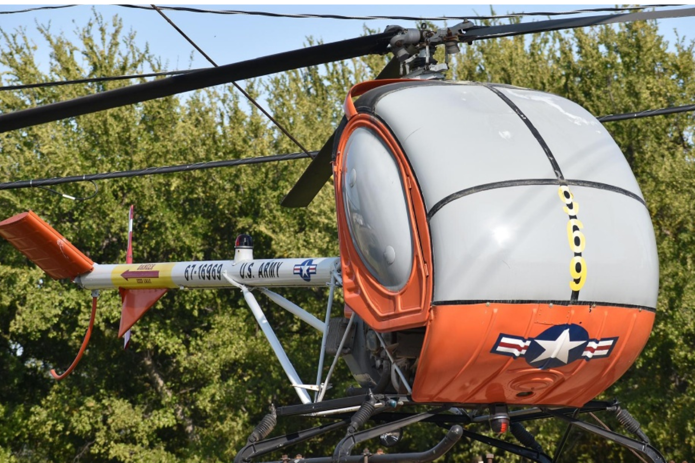
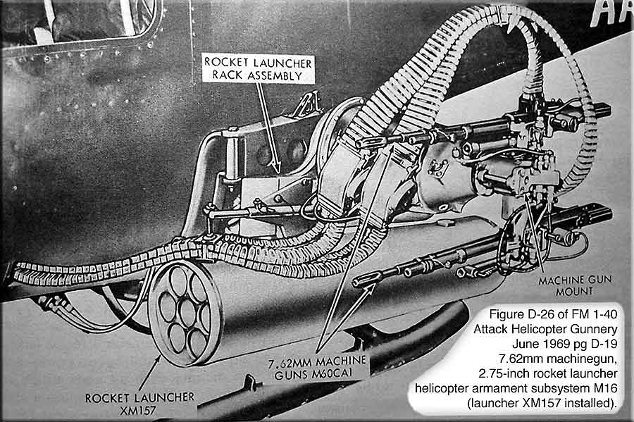
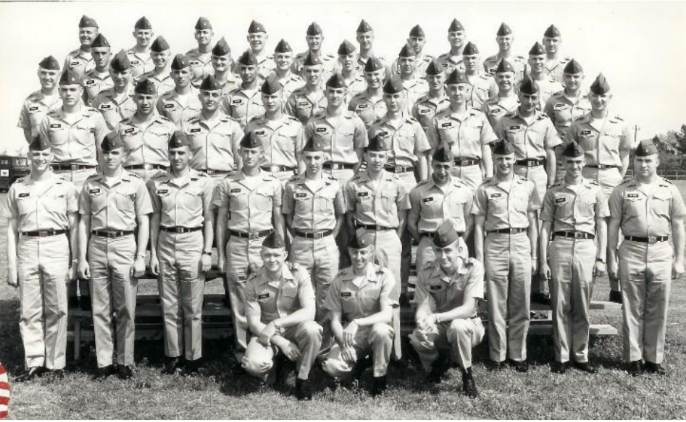

Neutral identification
1965 PARK Lighter / Made in U.S.A. slim presentation lighter inscribed to WOC Arthur P. Lancy Jr. The reverse inscription states that Lancy was a "Member, First Graduating Class Using Hughes TH-55A Helicopter" at the U.S. Army Primary Helicopter Training School, Fort Wolters, Texas.
The explicit inclusion of the TH-55A transition milestone directly on a period-engraved presentation lighter represents an exceedingly rare textual variant for Fort Wolters pieces of this cycle.
Outside sources document a related Class 65-9W entry in the VHPA Fort Wolters class-photo archive, a roster/name-list marked CLASS 65-9 R/W including the surname "Lancy," and a 1967 Tropic Lightning News Air Medal listing for WO Arthur P. Lancy, Co. B, 25th Avn. Bn. (Diamondheads).
WOC Arthur P. Lancy, Jr.
MEMBER, FIRST GRADUATING CLASS
USING
HUGHES TH-55A HELICOPTER
U.S. ARMY
PRIMARY HELICOPTER TRAINING SCHOOL
FORT WOLTERS, TEXAS
1965
External source links
These links point to outside archives, not pages created by the consignor.
- Tropic Lightning News, Vol. 2 No. 13, April 3, 1967 — Page 2, "Decorated" section, Air Medal subsection, lists WO Arthur P. Lancy, Co. B, 25th Avn. Bn. (Diamondheads).
- VHPA WOC Class Pictures Archive index — parent archive containing the 1965 Fort Wolters Class 65-9W entry and linked name list.
- VHPA direct Class 65-9W group photograph.
- VHPA direct roster/name-list image — includes "Lancy" and bottom notation "CLASS 65-9 R/W."
Evidence separation & tactical attribution
| Material Artifact Evidence | Separated Historical Context | Archival Source Verification |
|---|---|---|
| Physical Object: Inscribed base stamps, 1965 Hughes obverse medallion, and presentation text. | Airmobile Training: Historic milestone marking the transition to the TH-55A trainer aircraft. | VHPA WOC Class Photo Index: Class 65-9W Roster Ledger. |
| Name Linkage: Explicit reverse engraving dedicated to WOC Arthur P. Lancy Jr. | Combat Deployment: Documented frontline presence with the Diamondheads at Cu Chi during major spring border clashes. | Tropic Lightning News (April 3, 1967): Official Air Medal Decorations Registry. |
| Service Baseline: Verifiable military career trajectory distinct from USAF lineage. | Post-Wartime Timeline: Career tracking as a Customer Service Analyst for Hillsborough County, FL (2017–2022). | Veterans Legacy Memorial: Permanent Federal Registry confirming Honorable Discharge. |
Physical authentication from detail photographs
The new detail photographs strengthen the object-based evidence by showing the maker marks, hinge, chimney, engraving depth, and overall condition needed for an appraiser or auction cataloger to evaluate the lighter.
What the detail photographs reveal
- Hinge construction: The barrel hinge, visible rivets, and wear pattern support a vintage PARK lighter mechanism rather than a modern reproduction.
- Engraving depth: The lettering shows period-style depth and crisp edges consistent with professional engraving rather than modern laser etching.
- Hughes medallion: The front Class 65-9WA and Hughes World Leader globe marking appears struck or stamped rather than printed.
- Surface condition: The lighter shows honest age, light scratches, and patina consistent with age, without obvious deep damage or major plating loss.
- Overall integrity: The hinge, lid alignment, chimney, and presentation surfaces appear complete and suitable for consignment review.
Maker-mark confirmation
Primary maker mark: One bottom-stamp photograph shows "PRECISION MADE BY PARK INDUSTRIES MURFREESBORO, TENN. U.S.A." This is the most important object-level dating and maker identification detail in the new photo set.
Secondary stamp: The "PARK Lighter / MADE IN U.S.A." edge or bottom stamp provides a second authentication point for the lighter shell.
Chimney and hinge: The perforated wind guard, metal construction, and barrel hinge are consistent with mid-century PARK lighter mechanics and should be shown clearly in any auction packet.
Updated appraisal verdict
Valuation remains firm at $500–$850 USD, subject to auction-house review.
The current evidentiary package now includes physical authenticity indicators, historical significance tied to the first TH-55A graduating class language, external provenance through VHPA and Tropic Lightning News, and condition photographs showing an original, untouched presentation artifact.
Cataloging priority: The photograph showing "PRECISION MADE BY PARK INDUSTRIES MURFREESBORO, TENN. U.S.A." should be included prominently because auction house catalogers use maker marks to date and authenticate the object.
Artifact evidence
| Object | Slim presentation lighter |
|---|---|
| Primary base stamp | PRECISION MADE BY PARK INDUSTRIES MURFREESBORO, TENN. U.S.A. |
| Secondary base / edge stamp | PARK Lighter / Made in U.S.A. |
| Front / obverse | Class 65-9WA and Hughes World Leader medallion/marking. |
| Reverse inscription | Presented to WOC Arthur P. Lancy, Jr. / Member, First Graduating Class / Using / Hughes TH-55A Helicopter / U.S. Army / Primary Helicopter Training School / Fort Wolters, Texas / 1965. |
| Condition | Lid opens cleanly; hinge firm; striker wheel turns; insert present; no flint installed; no current spark; not cleaned, fueled, or serviced. |
Construction details
The lighter should be presented as a period PARK lighter with object-level authentication supported by its maker marks, hinge construction, chimney construction, engraving, and period presentation markings.
- Maker identification: PARK Industries, Murfreesboro, Tennessee.
- Mechanism evidence: Barrel hinge, rivets, insert, striker wheel, and chimney visible in detail photographs.
- Presentation evidence: Period engraving naming WOC Arthur P. Lancy Jr. and the Hughes TH-55A training milestone.
Artifact photos
Current photograph slots for the lighter. The first three files are already referenced by the packet. The bottom-stamp and chimney files below should be uploaded using these filenames or the filenames should be adjusted to match the uploaded images.


Separated source images
Aircraft context, group photo, roster/name-list, and award listing are separated for appraiser review. Use the external links for source verification.

Hughes TH-55A helicopter reference
Separate aircraft-context image for the TH-55A model named in the lighter inscription. This image is visual context only and is not presented as proof of ownership, use, or direct connection to the named candidate.

Contextual Reference: UH-1C 'Frog' Gunship configured with the XM-16 armament subsystem used by the Diamondheads at Cu Chi, 1966–1967
Separate aircraft-context image for the UH-1C heavy gunship model commanded by Lancy during his decorated combat service. This image bridges his training milestone (TH-55A) to his frontline combat deployment with the Diamondheads. Visual context only and is not presented as proof of ownership, use, or direct connection to the named candidate.

Fort Wolters Class 65-9W group photograph
Separate local reference copy of the class photograph. The source citation remains the VHPA direct image and the VHPA class-photo index.

VHPA roster / name-list image
The roster/name-list source includes "Lancy" and bottom notation "CLASS 65-9 R/W." The appraiser should use the source image for name review.

Tropic Lightning News award listing
Tropic Lightning News, Vol. 2 No. 13, April 3, 1967, Page 2, "Decorated" section, Air Medal subsection: WO Arthur P. Lancy, Co. B, 25th Avn. Bn. (Diamondheads).
Consignor contact
Daniel Bret Lingar
lingarb420@gmail.com